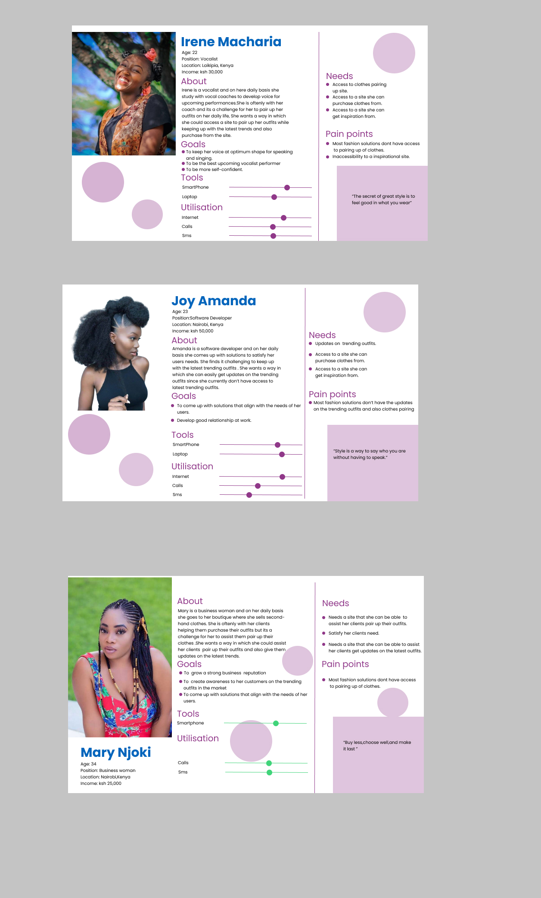
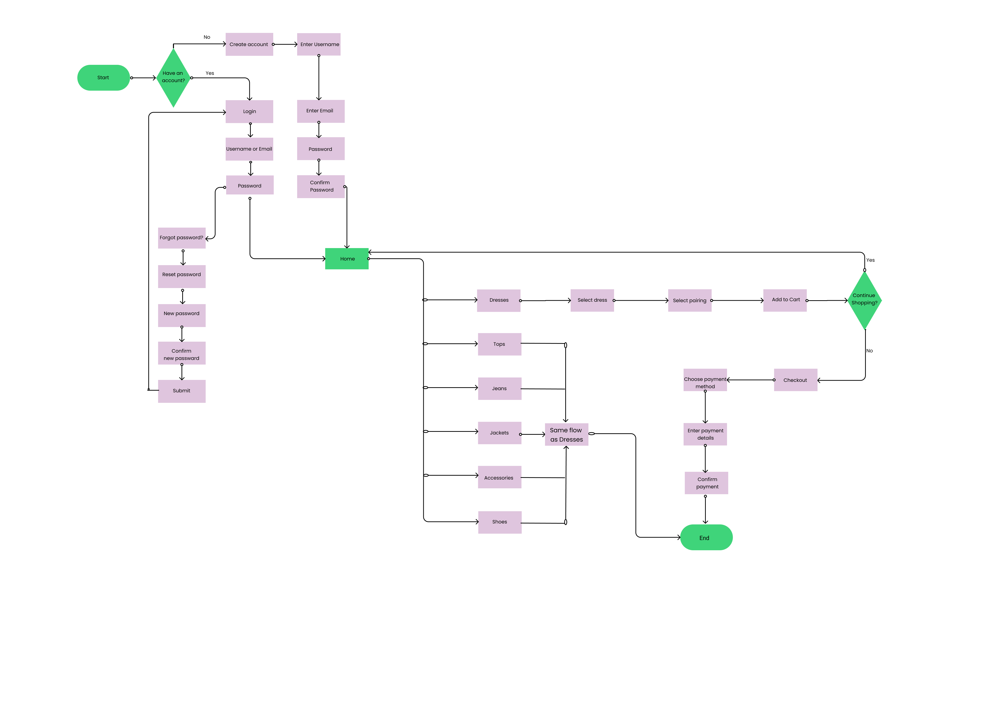

Welcome to MkDocs
For full documentation visit mkdocs.org.
Commands
mkdocs new [dir-name]- Create a new project.mkdocs serve- Start the live-reloading docs server.mkdocs build- Build the documentation site.mkdocs -h- Print help message and exit.
Project layout
mkdocs.yml # The configuration file.
docs/
index.md # The documentation homepage.
... # Other markdown pages, images and other files.
Glow & Glamour
Project Requirements Document
Background Most Women prefer buying trendy outfits. They are usually caught up in the moment that they do not stop to think, what clothes in their closet meet their desired outfit. This poses a problem when they want to pair up their outfit, it is at this juncture that most women resort to looking online for outfit inspirations. As much as there are tons of possible outfit combinations online, most of them are not made with the image of the black woman in mind. A lot of black women, therefore, struggle to find a perfect outfit combination online especially as the existing ones are not made with her in mind.
OBJECTIVES
Purpose of the product Who is it for and why are we building it? Our product is based on a website application that allows and makes it easy for kenyan women to navigate through it in order for them to pair up their outfits while keeping up with the latest trends. What are we going to build? Our product is based on a website application where women in Kenya will be able to pair up their outfits while keeping up with the latest trends.
Feature requirement details User story
As a user I would like to sign up As a user, I would like to log in As a user I would like to reset my password As an admin I would like to get access in order to add As a user I would like to search my preferred outfits As a user I would like to view different outfits As a user I would like to browse through different categories of outfit As a user I would like to select my preferred outfit As a user I would like to pair up my preferred outfits As a user I would like to add to cart As a user I would like to continue shopping As a user I would like to view my cart As a user I would like to proceed to checkout.
Languages Python Html/css Javascript
Goals for the product criteria
Functionality
We’ll need the functionality of the website for the user to navigate through it in an easy way. An example is there will be functionality in terms of buttons ,selecting their preferred outfits and being able to navigate to other pages until they accomplish their goal. Usability We’ll need to ensure the product(website) is easy to use. An example is , if our users while login they forgot their password they will be able to reset it. Reliability We’ll need to ensure that our product is reliable in terms of , our users will be able to trust it.
Performance We’ll need to make sure the performance of the product is helpful to our users, that is how fast the product needs to load while our users are navigating through it.
Timeline Our guide timeline will help us to prioritize and allocate the resources accordingly.
Task Date Testing 12/11/2021 Final Pitch 17/11/2021 Release date 20/11/2021
User Experience (UX) Design These is our visual representation of our the user journey Personas 
Useflow 
Low-Fidelity Wireframes

High-Fidelity Wireframes

Link to the actual figma file design Link https://www.figma.com/file/6yltswZDLm6JwDO39Wpoh9/Digital-Stylist?node-id=0%3A1